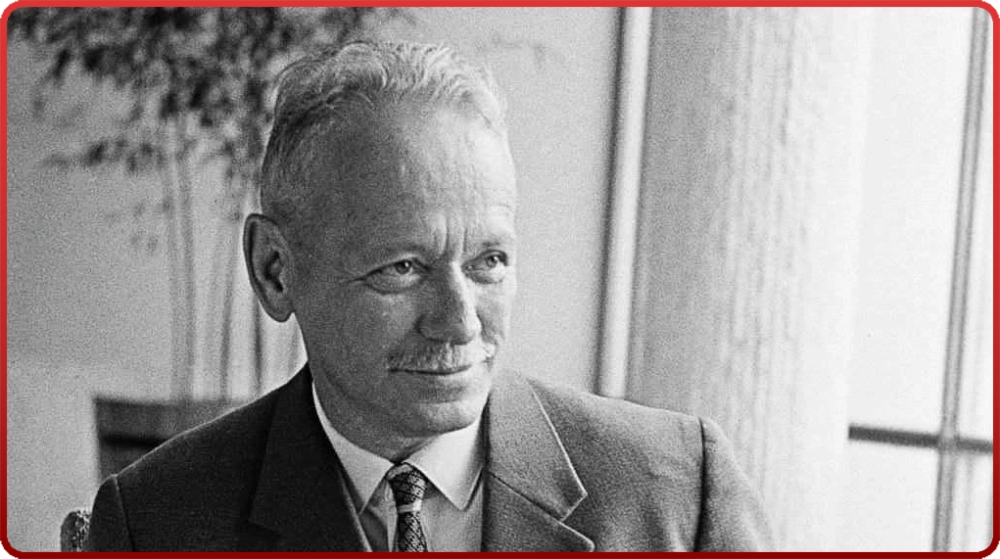
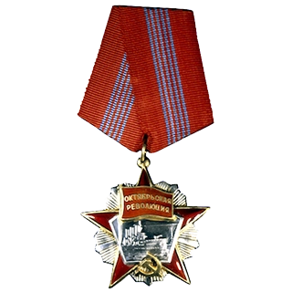
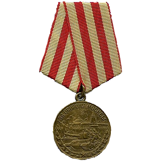
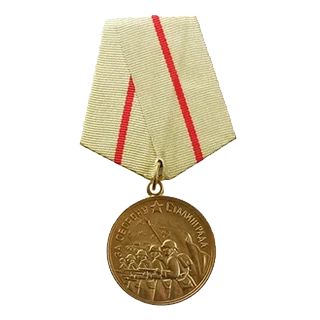

МИХАИЛ АЛЕКСАНДРОВИЧ ШОЛОХОВ
(1905–1984)
Михаил Александрович Шолохов (1905–1984) — крупнейший советский писатель, лауреат Нобелевской премии, летописец жизни донского казачества. Родился 24 мая 1905 года на хуторе Кружилин в станице Вёшенской. Учился в гимназии, но окончил лишь четыре класса: учебу прервали революция и Гражданская война. Служил в продотряде, затем уехал в Москву, где начал литературную деятельность, посещая объединение «Молодая гвардия».
Основные вехи творчества:
«Донские рассказы» (1926): Сборник рассказов, принесший известность, в которых он жестко и драматично изобразил классовое расслоение и братоубийственную войну на Дону.
«Тихий Дон» (1928–1940): Роман-эпопея, главный труд всей жизни. За монументальное полотно о судьбе казачества в годы Первой мировой и Гражданской войн Шолохов получил мировое признание и Нобелевскую премию (1965).
«Поднятая целина» (1932–1960): Роман о трагических событиях коллективизации на Дону, за который он был удостоен Ленинской премии.
Военные и послевоенные годы: Работал военкором в годы Великой Отечественной войны, писал очерки и главы романа «Они сражались за Родину». В 1956 году создал пронзительный рассказ «Судьба человека» о стойкости простого солдата.
НАГРАДЫ М. А. ШОЛОХОВА




